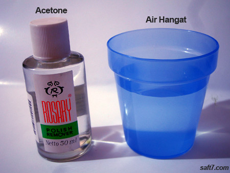
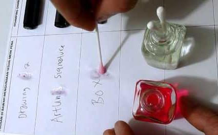
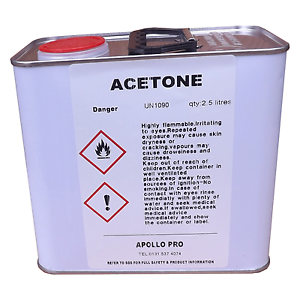

ACETONE in Daily Life
Acetone is a lot of fluid that is used as a cleanser. One of the best known benefits is as a nail polish remover. Acetone is a colorless, flammable liquid. Acetone dissolves in various comparisons with water, ethanol, diethyl ether, etc. It is also an important solvent. Acetone is used to make plastics, fibers, medicines, and other chemical compounds.
1. Acetone is used as a nail polish. One of them is cleaning fluid nail polish
All people especially women know the usefulness of this one acetone. Yes! which is used to clean nail polish.
2. Acetone is used as a super glue release
Other than can be used as a liquid cleaning nail polish, in the working world acetone can be used as a super glue release. by way of acetone mixed with warm water, then rinsed or smeared on the surface to be cleaned of glue.
3. Acetone can be used as permanent ink stain remover
Besides using the type-x, acetone can also be used to remove ink.
4. Acetone is used to thin and clean fiber and epoxy glass resins
acetone is best used for thinning fiber glass resins, cleaning glass glassware, and dissolving epoxy resins and super glue before hardening. Acetone can dissolve various plastics and synthetic fibers
5. As a solvent
Acetone can dissolve a variety of plastics, including nalgene bottles made from polystyrene, polycarbonate, and some types of polyprolylene. In the laboratory, acetone is used as a polar aportic solvent in most organic reactions, such as the reaction of SN2.
6. Feed stock
In the industrial field, acetone is reacted with phenol to produce bisphenol A. Bisphenol A is an important component in various polymers, such as polycarbonate, polyurethane, and epoxy resin. Acetone is also used in cordite manufacturing.